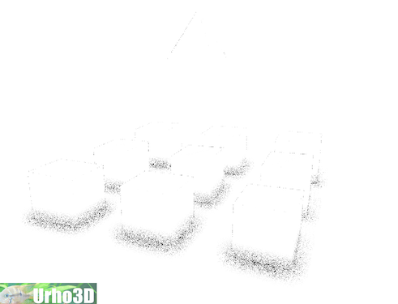
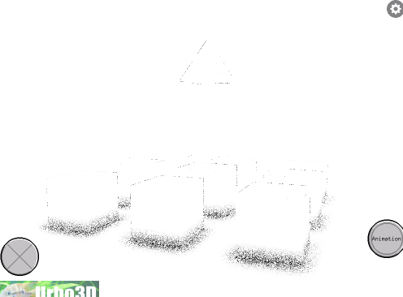

sabotage3d
Hello ,
Just a quick question is SSAO currently supported on IOS ?
Thanks,
Alex

Hello ,
Just a quick question is SSAO currently supported on IOS ?
Thanks,
Alex

There is no built in SSAO shader in Urho for any platform.
On OpenGL ES there is limited support for rendertarget formats and no MRT support, so typical deferred solutions are out of the question. But using just forward rendering, I believe you could do some degree of SSAO by rendering the scene normals and depth in a custom pass to a color texture, which could simply be RGBA8 with normals encoded to 2 components and depth encoded to the other 2. Then sample that texture in materials to calculate the occlusion factor.
I’m not going to elaborate on this because I haven’t tried it myself. The performance could very well be horrible because the SSAO sampling induces many texture fetches with calculated coordinates.
Thank you cadaver,
How can we access the depth and normal buffer ? I would like to give it a try and query it in the shader.
Are there any possible cheaper solutions for Ambient Occlusion like effect . I have lightmaps for the static objects I just need some interactive selfshadowing on the moving bits.
Look at the deferred / light pre-pass renderpath xml files (CoreData/RenderPaths) to see how the deferred lighting outputs the depth & normal RTs, then binds them for the lighting accumulation pass. You can look at the CoreData/Shaders/GLSL/PrepassLight & DeferredLight shaders to see how the actual sampling happens. But like I described above, these formats will not be available on iOS so you’d have to settle for a low-tech RGBA8 “G-buffer” pass which you have to write yourself.
Thanks a lot cadaver,
It seems that Apple supports this extension on all of their devices with OpenGL ES 2.0 . What would be easiest way to access it ?
khronos.org/registry/gles/e … exture.txt
Something like this should work although I am not sure how to implement it in Urho3D as there is no OpenGL ES 2.0 dedicated code.
[code]glGetIntegerv( GL_FRAMEBUFFER_BINDING, &main_buffer );
if( main_buffer < 0 ) main_buffer = 0;
glGenFramebuffers( 1, &shadowmap_buffer );
glBindFramebuffer( GL_FRAMEBUFFER, shadowmap_buffer );
glGenTextures( 1, &depth_texture );
glBindTexture( GL_TEXTURE_2D, depth_texture );
glTexParameteri( GL_TEXTURE_2D, GL_TEXTURE_MIN_FILTER, GL_NEAREST );
glTexParameteri( GL_TEXTURE_2D, GL_TEXTURE_MAG_FILTER, GL_NEAREST );
glTexParameterf( GL_TEXTURE_2D, GL_TEXTURE_WRAP_S, GL_CLAMP_TO_EDGE );
glTexParameterf( GL_TEXTURE_2D, GL_TEXTURE_WRAP_T, GL_CLAMP_TO_EDGE );
glTexImage2D( GL_TEXTURE_2D, 0, GL_DEPTH_COMPONENT, shadowmap_width, shadowmap_height, 0, GL_DEPTH_COMPONENT, GL_UNSIGNED_SHORT, NULL );
glBindTexture( GL_TEXTURE_2D, 0 );
glFramebufferTexture2D( GL_FRAMEBUFFER, GL_DEPTH_ATTACHMENT, GL_TEXTURE_2D, depth_texture, 0 );[/code]
The GLES2.0 code is mixed by #ifdef’ing among the regular OpenGL code.
The depth texture extension is already used for shadowmaps, but there is code which always sets up the shadow HW compare for depth textures, so you would have to modify that part to distinguish between “shadow map” and “readable depth buffer”.
Back when implementing the OpenGL rendering code I found it unreliable to use depth textures for reading back scene depth. The precision varied, and on some GPU’s you could both sample and depth-test the same depth texture at the same time, while on others you couldn’t, so the existing OpenGL deferred rendering code settled for always encodin the scene depth into a RGBA color texture. But you may have better luck with depth textures as you’re targeting a fixed platform (iOS).
Thanks cadaver. I will give that a try.
Is there any particular mechanics that can allow me to do it like extension for Urho rather than messing with the library itself. Maybe I can do this in seperate files and include them in Urho.
Is there any specific file where I have to set the shader uniforms. Is there any specific convention I have to follow ?
Any chance for some hints on how to use the depth texture extension with Urho3D ?
I spend a few days trying to wrap my head around it but it will take me ages .

Just as a guess…
Looking at the differed RenderPath.xml, they are setting up a few render targets like so:
<rendertarget name="albedo" sizedivisor="1 1" format="rgba" />
<rendertarget name="normal" sizedivisor="1 1" format="rgba" />
<rendertarget name="depth" sizedivisor="1 1" format="lineardepth" />Then writing to them with the differed pass here, and then using them again in the lighvolumes pass:
<command type="scenepass" pass="deferred" marktostencil="true" vertexlights="true" metadata="gbuffer">
<output index="0" name="viewport" />
<output index="1" name="albedo" />
<output index="2" name="normal" />
<output index="3" name="depth" />
</command>
<command type="lightvolumes" vs="DeferredLight" ps="DeferredLight">
<texture unit="albedo" name="albedo" />
<texture unit="normal" name="normal" />
<texture unit="depth" name="depth" />
</command>However, being as you do not want to use differed, to make it compatible with mobile, then you could potentially, set up the render paths the same way, but then write to them with a shader like this:
<rendertarget name="depth" sizedivisor="1 1" format="rgba" />
<rendertarget name="normal" sizedivisor="1 1" format="rgba" />
<command type="scenepass" pass="depth" vs="ssao" ps="ssao" vsdefines="DEPTH" psdefines="DEPTH" output="depth" />
<command type="scenepass" pass="normal" vs="ssao" ps="ssao" vsdefines="NORMAL" psdefines="NORMAL" output="normal" />
<command type="scenepass" pass="ssao" vs="ssao" ps="ssao" vsdefines="SSAO" psdefines="SSAO" blend="alpha">
<texture unit=0 name="depth" />
<texture unit=1 name="normal" />
</command>Then in your ssao.glsl you have it broken down into several #ifdef blocks to keep it all in one shader if you want.
This is all a guess, and I might be a little redundant here, but something along these lines might work. It might not be fast. At least this is where I would start. I’m hoping that someone that knows better can correct me if I’m wrong. I might give this a try at some point in the future, which could mean in 6 months at the rate I work.
Unfortunately deffered is not supported on OpenGL ES 2.0 . I am still trying to get a depth buffer writing to texture and then reading it under IOS.
I’m aware that deffered is not supported.
What my previous post was going over, was a potential way to go around that and doing it all in forward.
My above example shows you how to go about writing to a texture then doing operations on it to get that ssao.
Except there is an error in the part where I assign the “texture unit”, where I did it with integers in my example. It should be a string. I actually asked a question about that, and so far the answer is to use existing buffers. So to update my guess above:
<rendertarget name="depth" sizedivisor="1 1" format="rgba" />
<rendertarget name="normal" sizedivisor="1 1" format="rgba" />
<command type="scenepass" pass="depth" vs="ssao" ps="ssao" vsdefines="DEPTH" psdefines="DEPTH" output="depth" />
<command type="scenepass" pass="normal" vs="ssao" ps="ssao" vsdefines="NORMAL" psdefines="NORMAL" output="normal" />
<command type="scenepass" pass="ssao" vs="ssao" ps="ssao" vsdefines="SSAO" psdefines="SSAO" blend="alpha">
<texture unit="depth" name="depth" />
<texture unit="normal" name="normal" />
</command>Thanks ghidra,
I can’t get this to write depth under OSX. The whole pipeline is quite fiddly, a lot of things can get wrong.
Thanks ghidra.
This works so far I am writing a depth texture to sDiffMap and sDepthBuffer is not working under GLES 2.0 . As cadavar mentioned before it is slow. Can someone help me to get GL_OES_depth_texture working for GLES 2.0 . I have it working in sandbox project outside Urho3D. But I am having difficult time adding it to the engine. It would be big help as it will be crucial for the performance.
[code]
[/code]
I’ve been assisting sabatoge with this. I looks like we have it working, however it is predicatably slow.
What are some ways that we can try and get some speed back?
One question, the rendertargets? are those buffers, or are they being written to as textures? Would buffers be faster?
I would be pretty cool to get this in a functioning state for mobile.

Hi,
Like what was mentioned before SSAO is most likely too slow anyway regardless of generating an efficient way of making depth to the framebuffer. You’d also need to render the scene twice, do you really need SSAO for your app?
I have a possible idea though, can the linear depth just go into the alpha pass? You’d need to modify a whole bunch of shaders though to get it to do what you want, and the whole scene needs to be rendered to a texture first and blitted to a quad so you probably need to forgo MSAA. It would render in 1 pass though, but you may need to up the framebuffer to 16-bit per channel for enough precision.
However if you do want to keep MSAA and also render in 1 pass with depth, there’s also the GL_EXT_shader_framebuffer_fetch extension which is now available from iOS6 and up AFAIK. This allows you to sample from the framebuffer directly without it needing to be a texture (a standard renderbuffer is fine) if you tap into gl_lastFragData in your GLSL shader, and most likely declare that you require this extension in the shader also.
https://www.khronos.org/registry/gles/extensions/EXT/EXT_shader_framebuffer_fetch.txt
This is what I would recommend, provided depth is encoded into the alpha channel and not the depth renderbuffer directly as the spec says gl_fragDepth cannot be used, but it will take a few modifications to Urho3D to support this. I’m having issues getting my iOS dev license renewed and my mac mini is probably not set up right now to do any useful testing.
Anyway if you truly just want to render the scene twice with OES_depth_texture, we would need to get rid of the encode/decode step as there’s no real reason to do this if we’re attaching a depth buffer only as it isn’t an MRT and it doesn’t need to match the other buffers to get around the GL limitation:
In Bin/CoreData/Shaders/GLSL/Depth.glsl
should be
(possibly an #ifdef could be made here?)
Just make sure to not decode it after when sampling.
Looking at Source/Engine/Graphics/OpenGL/OGLGraphics.cpp it looks like depth textures can already be attached in the GLES code path from a first glance, but I think there needs to be some error checks added to Urho3D (unless my quick sublime text search wasn’t accurate) to see if the framebuffer status is working by using Graphics::CheckFramebuffer() whenever a framebuffer is created.
Thanks a lot boberfly,
I quickly looked at GL_EXT_shader_framebuffer_fetch but I couldn’t find any examples on how to read specific buffer like depth.
As far as I understand for SSAO we need to sample depth as texture is it going to work with GL_EXT_shader_framebuffer_fetch .
For OES_depth_texture I spent a week looking at the Urho3d code, but I didn’t have any luck getting it to work.
So far this is what I have as the sDepthBuffer is not working on IOS out of the box, I am using depth written to sDiffMap.
I couldn’t get sNormalMap writing at all even on OSX with forward rendering, so I am using the GL_OES_standard_derivatives extension to generate the normals from the depth.
If you have time you can build for OSX or Linux the SSAO it will be exactly the same as what I am getting on IOS.
I started a github repo: github.com/sabotage3d/UrhoSSAO
All the SSAO credits goes to reattiva
github.com/sabotage3d/UrhoSSAO/ … ocess.glsl
It should work out of the box on any platform. I have tested it on both OSX and IOS simulator and device on the device. Because of the flaky OpenGLES capture I cannot get any profiling of the code.
It is a clone from the Urho3D repo with the addition of my SSAO tests.
I have modified sample 34_Dynamic geometry to test the SSAO : github.com/sabotage3d/UrhoSSAO/ … ometry.cpp
This is a working RenderPath for both OSX and IOS it gives the same result: github.com/sabotage3d/UrhoSSAO/ … thSAO3.xml
And finally this is the modified shader from reattiva: github.com/sabotage3d/UrhoSSAO/ … ocess.glsl
This is the result with blur disabled:
OSX:

IOS Simulator same as on the device but with less artifacts:

I trid using the gl_FragDepth but it seems it is not supported in GLES 2.0 for Apple devices : khronos.org/registry/gles/e … _depth.txt
But I don’t see what is the relation between EXT_frag_depth and OES_depth_texture .
For OES_depth_texture according to the specs: khronos.org/registry/gles/e … exture.txt
All we need is to define GL_DEPTH_COMPONENT and GL_UNSIGNED_SHORT or UNSIGNED_INT inside glTexImage2D and bind it to a uniform. We should be able to read it directly form the depth framebuffer.
What I am not sure is how to do this in Urho3d. Is it already implemented can we just add a new uniform and bind it ?